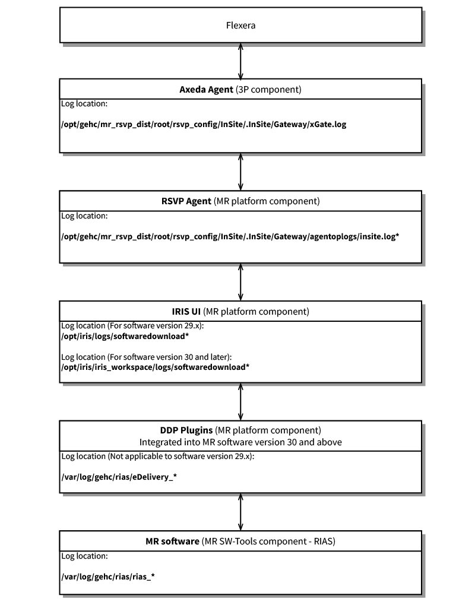
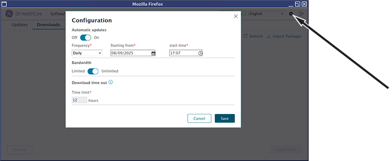
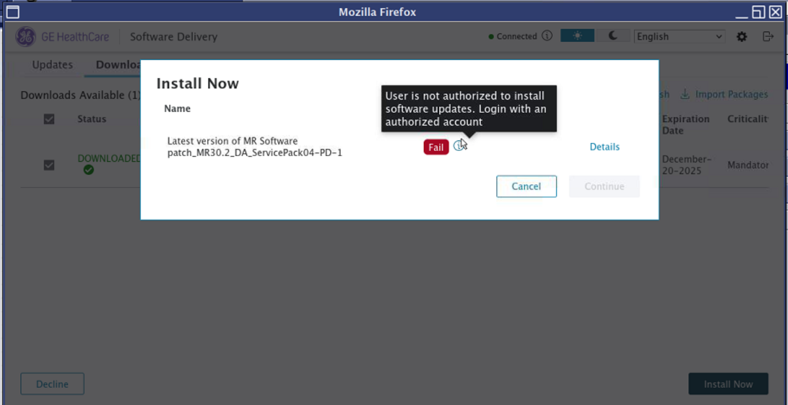
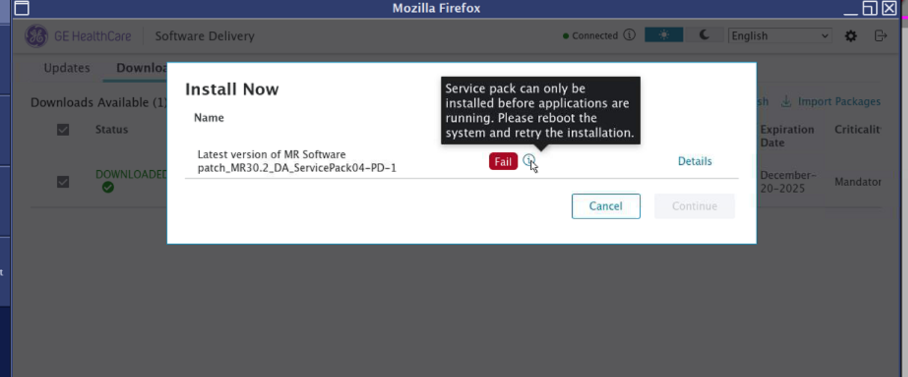
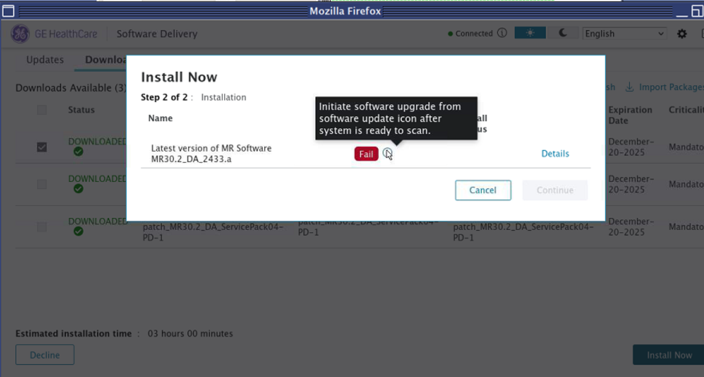

- 00000018WIA300ED8C0GYZ
- id_20716891.7
- Aug 29, 2025 6:46:22 PM
Troubleshooting Remote Software Download (RSD)
Troubleshooting Remote Software Download (RSD).
Overview
The Remote Software Download (RSD) feature provides the system with the capability to install new host software, service packs, and operator manuals through internet connectivity.
Theory of operations

The IRIS User Interface (UI) is the software utility that the system operator uses to interact with the RSD subsystem. The UI can be run from . The UI has three tabs. The Updates tab shows updates that are available for the system to download. The Downloads tab will show downloads that have completed and are ready to install or are in the process of downloading. The History tab shows downloads that have been successfully installed or failed at some point in the download or install process.
- Package entitlement
- Pre-download validation
- Package download
- Post-download validation
- Pre-install validation
Troubleshooting
Stage 1: Package entitlement
- (For software version 29.x) If the download does not start when the UI opens, start troubleshooting with stage 1.
- (For software versions 30.0 and later) If the Updates tab is empty, start troubleshooting with stage 1.
- Use one of the following methods to make sure the system is connected to the back office:
- On the Connect tab in FFA, make sure the device is in the FASTPOLL/POLLING/CONNECTED status.
- On the scanner, open Guided Install, click on the Service SW Insite tab, and click Configure Insite/IIP, or open to launch the Agent Config UI. Note The Registered and CRM Verified fields should be green.
- In a terminal window, run the command mrAgentApi.py agentstatusNote <CRMverified>Yes</CRMVerified> in the output of the command indicates the system is connected.
- If the system is not connected to the back office, check the network configuration, especially the proxy and DNS settings. Work with the site network administrator to make sure network settings are correct to connect to the RSvP back office. Network connectivity issues will be logged in: /opt/gehc/mr_rsvp_dist/root/rsvp_config/InSite/.InSite/Gateway/xGate.log.
The file must be opened as root. Open a command window and enter su - to log on as root user. When the system is connected to the back office, open the IRIS UI and look for the update in the Updates tab.
- If the system is connected to the back office and the update does not appear in the IRIS UI, in a terminal, run the command mrAgentApi.py software_list_updates
- If the command outputs an empty response, check the following:
- The package may not be entitled to the device. Contact the order management team to make sure the package is entitled for the site and then check the system again.
- There may be an RSvP/Flexera problem. Examine /opt/gehc/mr_rsvp_dist/root/rsvp_config/InSite/.InSite/Gateway/agentoplogs/insite.log for errors. If there are errors related to download or failures similar to the one shown below, contact the RSvP team for further troubleshooting.
2024-07-22 16:32:11,128 - 20211 - updateResponseParser.py:182 - ERROR - __parse_failure_response() - Failed to find returned enterprise error_code <GENERIC_ERROR> in the defined possible error_codes, returning <52> 2024-07-22 16:32:21,321 - 20241 - updateResponseParser.py:170 - ERROR - __parse_failure_response() - Web-service call for getting SWD update returned with status:<FAILED> statusDescription:<Exception occurred while getting package updates for device MRBALIB03> Webservice Response: <{"status":"FAILED","statusCode":2,"statusDescription":"Package Updates : Parsing exception in flexera Api invocation. Returning failure message with 502 for crmNumber: XXXXX","errorResponse":{"errorCode":"API_NOT_RESPONDING","errorMessage":"Package Updates : Parsing exception in flexera Api invocation. Returning failure message with 502 for crmNumber: XXXXX","errorParams":null}}>.
- If the command outputs the intended update package details, RSvP is able to retrieve the package from Flexera but the package is failing the IRIS pre-download validation. See Stage 2: Pre-download validation to continue troubleshooting.
- If the command outputs an empty response, check the following:
Stage 2: Pre-download validation
- (For software versions prior to 30.0) the download does not start, or
- (For software version 30.0 and later) the update does not show in the Updates tab of the IRIS UI, the package is failing the pre-download validation.
- The software version shown by cat /mr.closure.MrpApps must match the software version of a package in Release From in the Flexera update, and the Requires field of the packagemetadata.json.
- The packageID field in the packagemetadata.json file and the Release To field package in the Flexera update must match.
- The same package must not be in the History of the MR scanner in a DOWNLOADED, DECLINED, INSTALLED, or INSTALLATION_ERROR state.
- The disk space check must happen and return success.
- (For software versions prior to 30.0) /opt/iris/logs/softwaredownload-trace.log
- (For software versions 30.0 and later) /opt/iris/iris_workspace/logs/softwaredownload-trace.log
Note the timestamp:
2024-08-14 12:42:37 8140d43b03f8f4fe [XNIO-1 task-4] INFO com.ge.healthcare.softwaredownload.utils.PackageUtils:316 -Invoking : [/usr/bin/python3, /opt/ddp/eDelivery/scripts/getValidatedUpdates.py, --file=/opt/iris/iris_workspace/updates.json] 2024-08-14 12:42:39 8140d43b03f8f4fe [XNIO-1 task-4] INFO com.ge.healthcare.softwaredownload.utils.PackageUtils:336 -Response Code : 0 . Response Message : ["patch_MR30.2_DA_ServicePack04", "patch_MR30.2_DA_ServicePack03", "5896319_r3-OPMAN"] 2024-08-14 12:42:39 8140d43b03f8f4fe [XNIO-1 task-4] INFO com.ge.healthcare.softwaredownload.plugins.impl.PluginScriptImpl:154 -After validation script invokation : [patch_MR30.2_DA_ServicePack04, patch_MR30.2_DA_ServicePack03, 5896319_r3-OPMAN]
Then, open /var/log/gehc/rias/rias_full_software_install_0.log or rias_service_pack_install_0.log and investigate any errors in entries with the same timestamp as the package validation.
Stage 3: Package download

- (For software versions prior to 30.0) Running the RSD UI will start the download of any validated packages.
- (For software versions 30.0 and later) Downloads can be started from the Updates tab of the RSD UI.
- (For software versions prior to 30.0) /opt/iris/softwaredownload-trace.log
- (For software versions 30.0 and later) /opt/iris/iris_workspace/logs/softwaredownload-trace.log
Searching for these strings will provide the status and history of RSD packages on the system. If the download is interrupted by events such as network outage, power shutdown, or system reboot, the download will pause and it will resume when system connectivity is restored. To check for a download package in the paused state, examine /opt/gehc/mr_rsvp_dist/root/rsvp_config/InSite/.InSite/Gateway/agentoplogs/insite.log or run SoftwareDownload.py status as root.
- (For software versions prior to 30.0) /opt/iris/logs/softwaredownload-trace.log
- (For software versions 30.0 and later) opt/iris/iris_workspace/logs/softwaredownload-trace.log
- (For software versions 30.2 and later) The IRIS UI provides the option to retry a cancelled download.
- (For software versions prior to 30.2) If a package is cancelled, do the following:
- Open a C Shell.
- Run su - and enter the root password.
- Run SoftwareDownload.py cancel -clean
- Run rm -rf /var/opt/gehc/mr/riasdata/tmp/*
- Open the IRIS UI and start the download from the Updates tab.
Stage 4: Post-download validation
- The packagemetadata.json file must be valid with no errors.
- The checksum of the downloaded iso file(s) must match the associated checksum(s) listed in the packagemetadata.json file.
- (For software versions prior to 30.0) /opt/iris/logs/softwaredownload-trace.log
- (For software versions 30.0 and later) opt/iris/iris_workspace/logs/softwaredownload-trace.log
Operator manual-specific post-download validation
After an operator manual package download has completed, the opman part number will be compared to the REVISION.list from the system. If the downloaded opman part number is not in the system REVISION.list file, the iso file will be mounted and the REVISION.list file from the downloaded iso file will be examined for the required entry. that REVISION.list file does not contain a matching part number, then the package will be moved to history without being installed or being available to install.
The part number validation will done by comparing to the ProductConfig_SW version.
Any errors will be logged in the /var/log/gehc/rias/rias_full_software_install* file. Find the file with the most recent time stamp using ls -ltr.
Service pack-specific post-download validation
After a service pack download is complete and the package is validated, the downloaded iso file will be mounted to the tmp folder and the contents will be copied to: /var/opt/gehc/mr/riasdata/staging/<servicepack_pkgId>/ where <servicepack_pkgId> is the ID of the downloaded service pack. The extraction task is logged in /var/log/gehc/rias/rias_full_software_install_0.log similar to the following:
{'time':'2024-08-14 13:19:47,398', 'filename': 'post_download_plugin.py', 'level': 'INFO', 'message': '/var/opt/gehc/mr/riasdata/staging/patch_MR30.2_DA_ServicePack04/patch_MR30.2_DA_ServicePack04-PD-1.iso is available.'} {'time':'2024-08-14 13:19:47,399', 'filename': 'post_download_plugin.py', 'level': 'INFO', 'message': 'creating the mount dir: /tmp/31256'} {'time':'2024-08-14 13:19:47,399', 'filename': 'post_download_plugin.py', 'level': 'INFO', 'message': 'mounting iso on /tmp/31256'} {'time':'2024-08-14 13:19:47,579', 'filename': 'post_download_plugin.py', 'level': 'INFO', 'message': 'unmounting /tmp/31256...'} {'time':'2024-08-14 13:19:47,620', 'filename': 'post_download_plugin.py', 'level': 'INFO', 'message': 'Extracting /var/opt/gehc/mr/riasdata/staging/patch_MR30.2_DA_ServicePack04/patch_MR30.2_DA_ServicePack04-PD-1.iso Success.'}
If the extraction task fails and the service pack RPM files are not copied to the staging folder, the folder will only contain the ISO and json files. In this case, the packaged will display a status of DOWNLOADED in the IRIS UI. The IRIS UI will allow the user to install the service pack and will show a status of INSTALLED in the History tab. If the status of the service pack shows INSTALLED but the output of the getver command does not show the service pack, delete the service pack folder: rm -rf /var/opt/gehc/mr/riasdata/history/<servicepack_pkgId>/ where <servicepack_pkgId> is the ID of the downloaded service pack and then retry the package download using the IRIS UI.
Stage 5: Pre-install validation
- Role-based access validationAll MR SW package installations are controlled with role-based access based on the userRole entry in the packagemetadata.json.
- If the userRole is GESoftwareInstallerRole, the logged-in EA3 user account must be part of the GESoftwareInstaller group to install the software package.
- If the userRole is GEService, the logged-in EA3 user account must be part of the GESoftwareInstaller group and a class M service key must active on the system.
Make sure the logged-in user is part of the GESoftwareInstallerRole group using the GetUser command. The output will show GESoftwareInstallerRole:
>> GetUser GEHC_SEC_LANG_SCRIPT= Current user logged in: User ID=admin User Name= Domain Name=MRBAY1 Roles={ GESoftwareInstallerRole LinuxShellRole ADMIN} >>
The user’s role can also be determined in the EA3 admin page, click on the user name on the users tab and make sure GESoftwareInstaller group is listed for the user.
If the logged-in EA3 user is not part of the GESoftwareInstaller group:
- (For software versions prior to 30.0) The IRIS UI will display the Install button, but clicking on the button will show an error message.
- (For software versions 30.0 and later) The IRIS UI will not display the Install button.
If the download package userRole is GEService and a class M service key is not active, an error will display.Figure 3. Role-based access error 
Role-based access error messages similar to the following will be written to: /var/log/gehc/rias/eDelivery_debug_0.log.
ERROR|2024-08-14 15:43:36,053|Process-12|iris_plugins|setup_logger_base.py|worker_process()|113 service person allowed check exception return code : 1,Command '/opt/gehc/mr_rias_dist/root/scripts/service_person_allowed_check_plugin.py' returned non-zero exit status 1. ERROR|2024-08-14 15:43:36,061|Process-14|iris_plugins|setup_logger_base.py|worker_process()|113 Common user role check FAILED for Role = GEService ERROR|2024-08-14 15:43:36,068|Process-16|iris_plugins|setup_logger_base.py|worker_process()|113 User role validation failed- GEService
- Role-based access validation
- Service pack
Service packs installation will not happen after the system has completed start up. The correct installation flow is the package is downloaded, validated, and shows ready for installation. The system is then rebooted and will show the IRIS UI after user log on. The service pack can then be installed and the system will complete the start up process after the IRIS UI is closed.
An error message will show if a service pack installation is attempted after system start up is complete.Figure 4. Service pack installation with applications running error 
An error will be written to:- (For software versions prior to 30.0) /var/log/gehc/rias/rias_service_pack_install*
- (For software versions 30.0 and later) /var/log/gehc/rias/eDelivery_install_0.log
INFO|2024-08-14 13:20:07,247|Process-26|install_plugins|setup_logger_base.py|worker_process()|113 "The PreInstall validations status- [{"packageId": "patch_MR30.2_DA_ServicePack04", "status": "FAIL", "message": "Service pack can only be installed before applications are running. Please reboot the system and retry the installation."}]
- Full software
Full software is only installed when applications are fully running. Applications are required to be running for the SaveInfo that is done during bootable media creation.
If full software installation is attempted before applications are finished loading or in root login, an error message will be displayed.Figure 5. Full software installation without applications running error 
An error will also be written to:- (For software versions prior to 30.0) /var/log/gehc/rias/rias_service_pack_install*
- (For software versions 30.0 and later) /var/log/gehc/rias/eDelivery_install_0.log
INFO|2024-08-19 12:19:26,939|Process-22|install_plugins|setup_logger_base.py|worker_process()|113 Received Log request for System ERROR event at 2024-08-19T12:19:26.934556+05:30 for uid : PRE_INSTALL_CHECKS_FAILED and custom msg Initiate software upgrade from software update icon after system is ready to scan.. for package id ["MR30.2_DA_2433.a"] INFO|2024-08-19 12:19:26,946|Process-24|install_plugins|setup_logger_base.py|worker_process()|113 Execution Status for [SystemEventLocalLogger]: [True] INFO|2024-08-19 12:19:26,954|Process-26|install_plugins|setup_logger_base.py|worker_process()|113 "The PreInstall validations status- [{"packageId": "MR30.2_DA_2433.a", "status": "FAIL", "message": "Initiate software upgrade from software update icon after system is ready to scan."}]
If applications are running and this error is shown, run /usr/g/bin/getStartupStatus. If the command displays the following output, restart the system and retry the software installation after the system has finished start up.
12:26:02.235238 TTS_FILESIZE: 2000 kbytes 12:26:02.235323 TTS_FILE: writing to file: /usr/g/service/log/getStartupStatus.log... TIMEOUT received from HostMonitor
- Operator manual
Operator Manual There is no scanner state validation for operator manual packages.
- Service pack